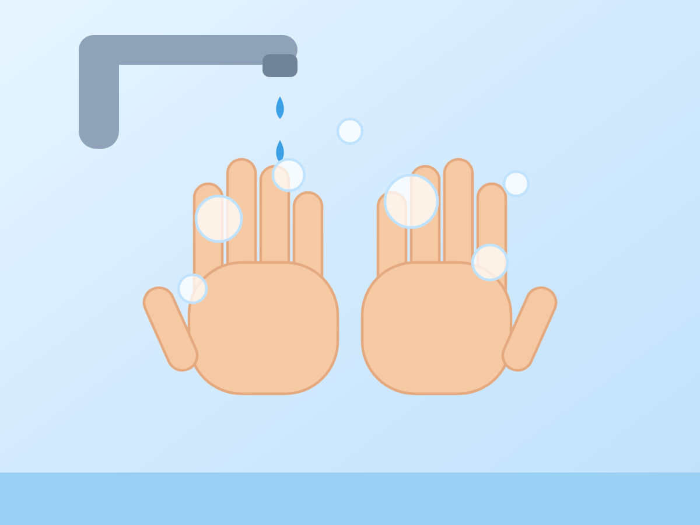

1-variantKolontitul
Qo‘l yuvish
Sanitariya byulleteni: qo‘lni to‘g‘ri yuvish tartibi (jarayon sxemasi).
Yuqori: Shahrisabz Tibbiyot Texnikumi / Qo‘l yuvish • rasm: qol-yuvish.png

4Shahrisabz Tibbiyot TexnikumiQo‘l yuvish
Sahifa 1 dan 1
1
2

Qo‘l yuvish — infeksiyadan saqlanishning eng oddiy va eng samarali usuli. Har bir bemorga yaqinlashishdan oldin va muolajadan keyin, shuningdek, tashqaridan kirganda, ovqatlanishdan oldin va hojatxonadan so‘ng qo‘lni sovun bilan yuvish shart.
Qo‘lni kamida 20 soniya davomida yuving. Yuvish vaqtida barmoqlar orasi, tirnoq atrofi va bilak ham yuvilishi kerak. Yuvishni quyidagi tartibda bajaring: sxemadagi har bir bosqichni ketma-ket takrorlang.
3
Kamida 20 soniya yuving!
!
Bosqichlar:
- Kaftlarni ishqalang
- Barmoq orasini yuving
- Barmoq uchlarini ishqalang
- Bosh barmoqni yuving
- Chayib, quriting
1 — WordArt • 2 — Rasm • 3 — Shakllar (guruhlangan) • 4 — Kolontitul (yuqori va pastki). Raqamlar faqat izoh: hujjatga yozilmaydi. Kulrang fon — avtomatik maydon.